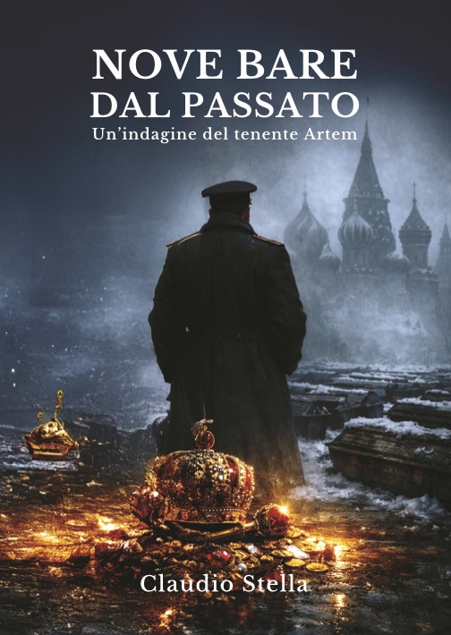
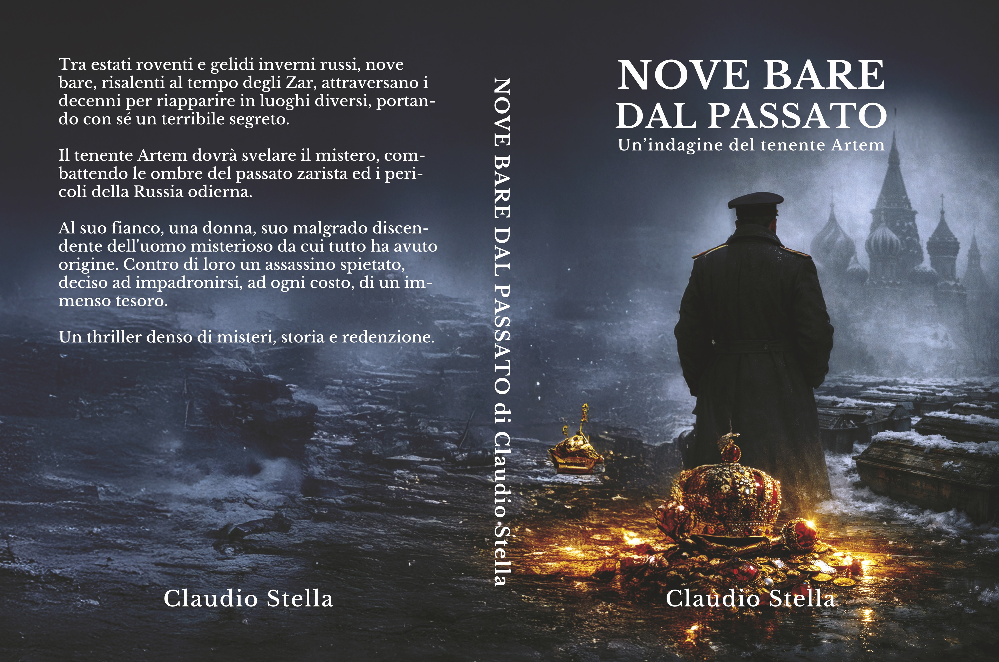
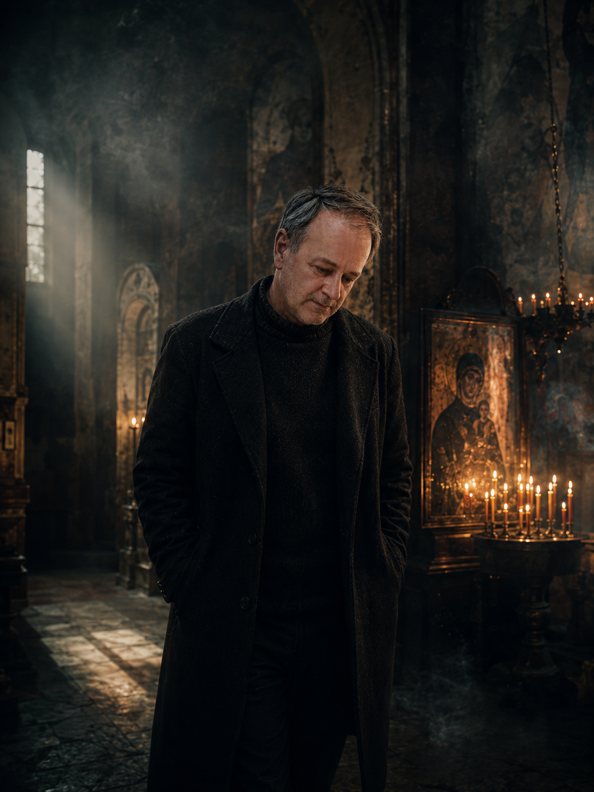
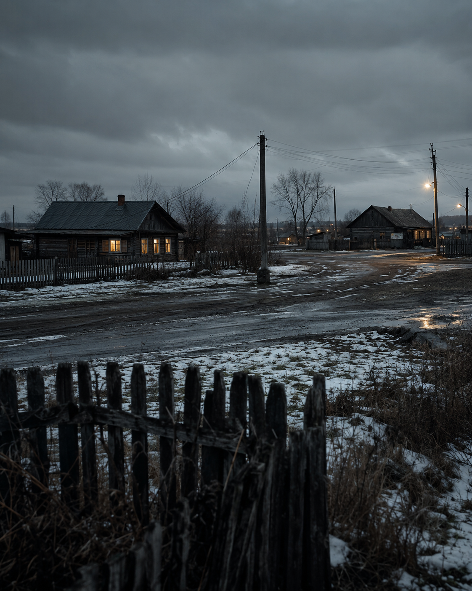
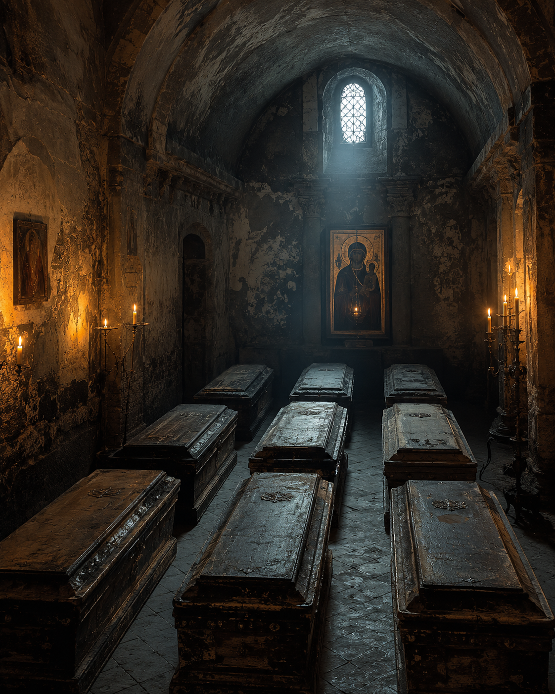
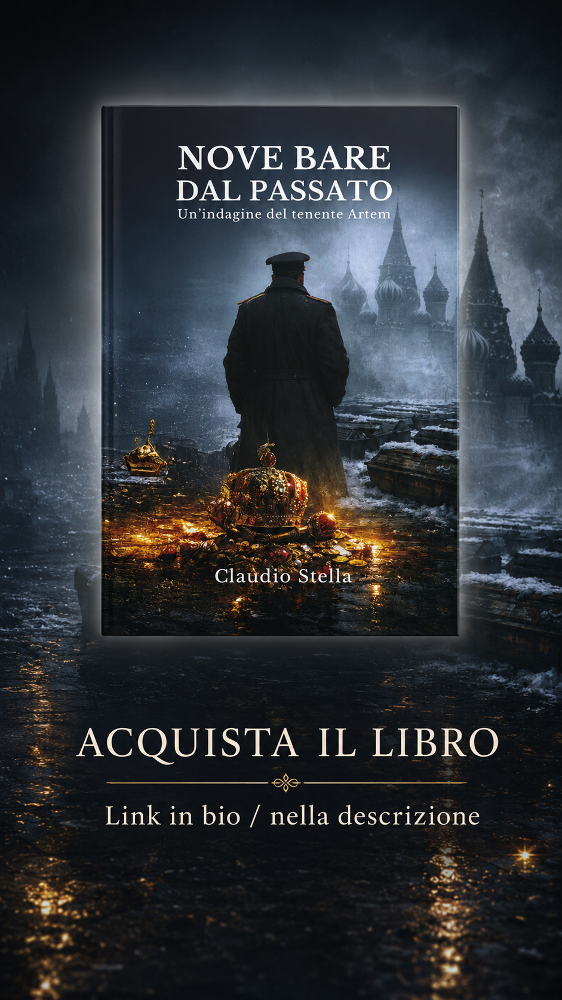
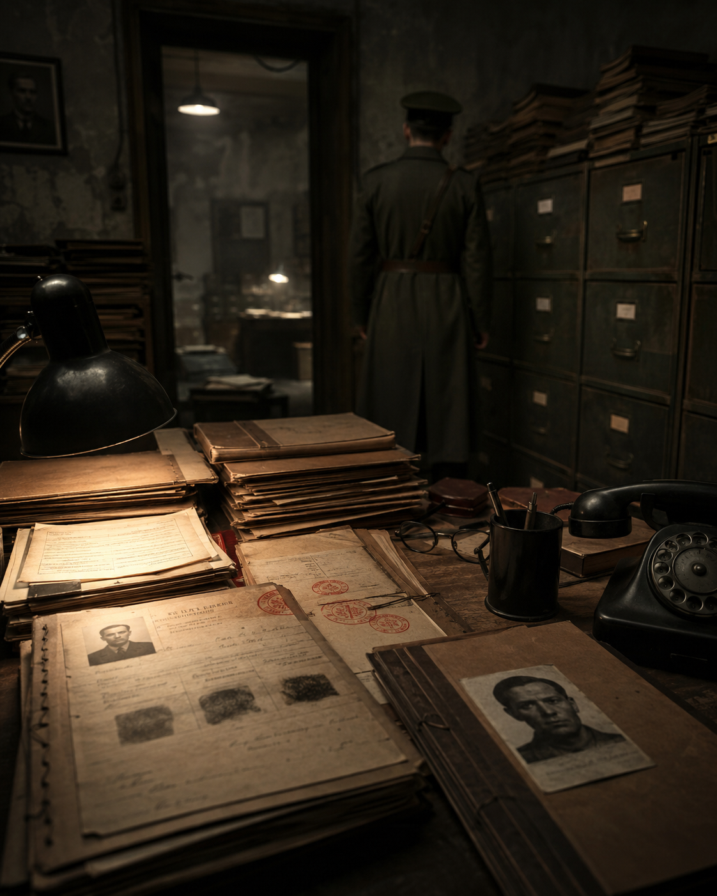
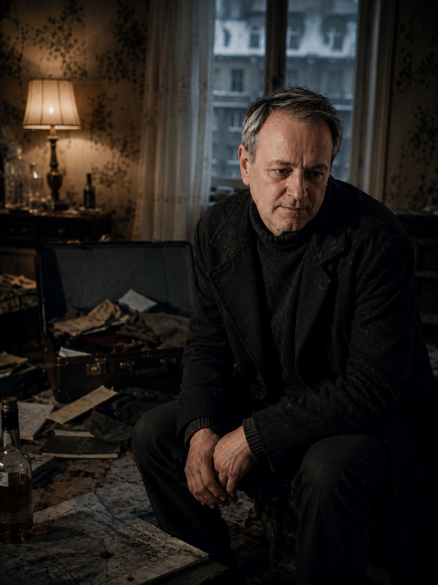
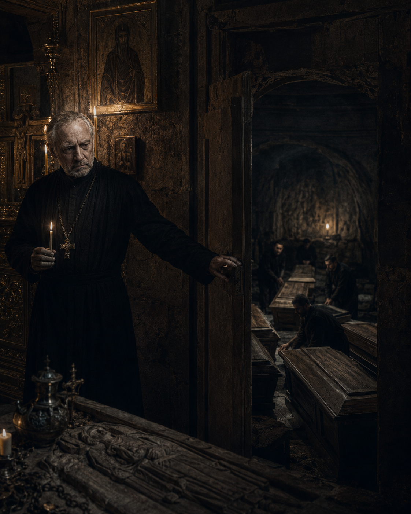
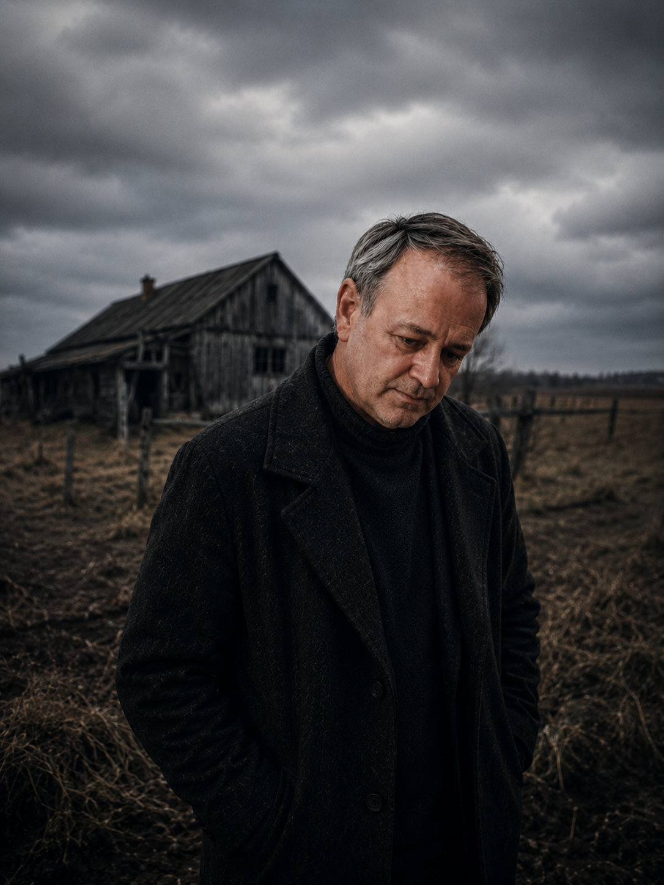

01
UNA TRACCIA
Non tutte le domande arrivano con una risposta.
SEGUI L’INDIZIO
Aggancio
Il piano visivo traduce il romanzo in un sistema coerente di autore, personaggi, luoghi, indizi, immagini e contenuti. L'obiettivo non è pubblicare in modo casuale, ma costruire riconoscibilità, attenzione e relazione con i lettori.
IL PROTAGONISTA
Tenente. Intuitivo. Imperfetto.
Dal romanzo all’universo narrativo
Questo sistema visivo traduce Nove Bare dal Passato in un ecosistema editoriale coerente, costruito attorno all’autore Claudio Stella, al tenente Artem e a un immaginario thriller & crime composto da personaggi, luoghi, indizi, memoria storica e tensione narrativa.
L’obiettivo non è promuovere un singolo libro in modo isolato, ma definire una grammatica visuale e contenutistica capace di accompagnare Claudio Stella come autore e di rendere riconoscibile, nel tempo, la futura serie narrativa del tenente Artem.
Claudio Stella come voce e origine dell’universo narrativo.
Nove Bare dal Passato come primo caso editoriale e narrativo.
Artem come personaggio ricorrente e punto di continuità futura.
Visual, contenuti, social, sito e relazione con i lettori.
Sobrio, investigativo, cinematografico.
Memoria, traccia, silenzio, indagine, neve, archivio, oro, segreto.
Il piano visivo suggerisce le domande, ma non svela la soluzione.


La copertina nasce per presentare il romanzo come un thriller storico-investigativo ambientato tra memoria russa, luoghi freddi, documenti, segreti e indagine. La sua funzione non è anticipare la soluzione, ma costruire una prima soglia narrativa capace di trasmettere mistero, tensione e profondità storica.
La direzione visiva mette in relazione il presente dell’indagine e un passato che continua a riaffiorare. Gli elementi freddi e scuri evocano silenzio, distanza, neve, archivio e ricerca; gli accenti luminosi o preziosi richiamano invece potere, memoria, tracce imperiali e ciò che resta sepolto sotto la superficie.
La copertina diventa la matrice del sistema visivo: influenza palette, titolazioni, ritmo delle immagini, texture, contrasti e tono dei contenuti social. Feed, template, spot, caroselli e sito devono derivare dalla stessa grammatica, senza limitarsi a ripetere la cover.
La progettazione della copertina e la traduzione dell’universo narrativo in sistema visuale appartengono alla direzione creativa di Federica Centonze. Il lavoro collega graphic design, cultura visuale, art direction, storytelling editoriale e strategia digitale.
Codici visivi per l’universo thriller & crime di Claudio Stella
TITOLI: Cormorant Garamond (serif editoriale, per thriller storico e titolazioni).
TESTI: Inter (sans-serif leggibile, contemporanea e sobria).
REGOLE:
Elementi visivi: nebbia, grana fotografica minima, carta d’archivio / documento, linee sottili o reticoli investigativi.
REGOLE: texture discreta; mai invasiva; mai sopra titolo o volto; mai effetto "template horror"; mai simulazione di carta antica troppo caricata.


Il mood fotografico unisce ritratto editoriale, noir contemporaneo, luce fredda, luoghi silenziosi e dettagli d’archivio. I soggetti non devono apparire come supereroi o figurine fantasy, ma come presenze narrative credibili, imperfette e sospese.
DA USARE
DA EVITARE
Il Brand Board costituisce una guida progettuale per l’applicazione futura del sistema visivo. Palette, immagini, texture, tipografia e regole sono proposte coerenti con il romanzo e con gli asset disponibili; dovranno essere validate con l’autore prima dell’uso commerciale o editoriale definitivo.
Sei registri narrativi per costruire contenuti coerenti senza ripetere sempre la stessa immagine.

PRONTONel sistema editoriale è previsto un visual dell’autore mentre lavora su appunti, bozze, manoscritti o materiali di ricerca. L’asset non è ancora disponibile e non deve essere sostituito con un duplicato.
Storyboard concettuale · 1 minuto · Nessuno spoiler

Un ingresso audiovisivo nell’universo di Claudio Stella, tra luoghi, tracce, memoria e mistero.
GUARDA LO SPOTTocca il player per attivare l’audio.
Il video traduce in forma audiovisiva il sistema narrativo del romanzo: silenzio, indagine, memoria, documenti, luoghi e tensione. Lo storyboard resta disponibile come traccia progettuale del concept.
Profilo autore prototipale · sistema editoriale thriller & crime
Il seguente mockup rappresenta una proposta di presenza social per Claudio Stella come autore di thriller & crime. Handle, follower, post, highlights e CTA sono elementi grafici dimostrativi e non rappresentano dati reali, risultati già ottenuti o account già attivi.
Un’identità seriale per accompagnare il lettore tra autore, casi, personaggi e indizi.




Le nove caselle alternano autore, romanzo, personaggi, oggetti, luoghi e mistero. Ogni contenuto ha una funzione precisa nel ritmo del feed: riconoscibilità, atmosfera, approfondimento, relazione o invito alla scoperta.
La griglia non è una successione casuale di immagini. Ogni casella alterna riconoscibilità dell’autore, immaginario del romanzo, profondità dei personaggi, atmosfera e inviti alla relazione. Il risultato è un feed che accompagna il lettore dentro l’universo narrativo senza trasformare la storia in un riepilogo o in uno spoiler.
Il mockup profilo, gli highlights, la griglia 3×3, i titoli, le call to action e i pilastri editoriale costituiscono una proposta progettuale. Non rappresentano un account Instagram già attivo, dati reali, follower acquisiti, vendite, conversioni o contenuti già pubblicati. La struttura dovrà essere validata con Claudio Stella e adattata alle piattaforme realmente scelte per il progetto.
Nove formati 4:5 adattabili a 9:16 per rendere riconoscibile l’universo thriller & crime di Claudio Stella.
I template rappresentano strutture visuali riutilizzabili. Immagini, copy, call to action e frequenza di pubblicazione dovranno essere adattati e validati prima dell’uso sui canali effettivi.
La voce dietro l'indagine
Un segreto sepolto
Nebbia, neve, memorie
“Ogni traccia porta con sé una domanda.”
PASSATO · MEMORIA · INDAGINE
Da una traccia a un caso: sei passaggi per entrare nell’universo thriller-investigativo senza spoiler.
Contenuto culturale e narrativo a scopo divulgativo. Le slide introducono atmosfera, luoghi, personaggi e indizi, ma non rivelano soluzione, responsabili, moventi o finale del romanzo.
Formati verticali e copertine permanenti per accompagnare il lettore tra indizi, luoghi e contenuti dell’autore.
Quattro stories collegate per costruire attenzione, immersione e invito alla scoperta.
Non tutte le domande arrivano con una risposta.
Ci sono luoghi in cui anche il silenzio sembra ricordare.
Osservare non basta. Bisogna capire cosa manca.
Un romanzo apre il caso. Un autore costruisce un universo.
Le call to action rappresentano proposte di flusso. Dovranno essere collegate a canali, sito o funnel soltanto dopo la definizione tecnica dell’ecosistema digitale dell’autore.
Otto copertine permanenti per organizzare il profilo in aree narrative riconoscibili.
Biografia, scrittura, letture, percorso autoriale.
Romanzo, presentazione del caso, contenuti principali.
Schede personaggio, dossier, tratti narrativi.
Personaggio, tracce relazionali, scoperte.
Oggetti, documenti, domande, quiz narrativi.
Ambientazioni, atmosfera, memoria del territorio.
Dietro le quinte della scrittura, fonti, appunti, processo creativo.
Q&A, commenti, approfondimenti futuri, community.
Mese 1 · prototipo operativo di quattro settimane e dodici contenuti da validare.
Il calendario rappresenta un’ipotesi di flusso editoriale. Giorni, formati, canali, frequenza e call to action dovranno essere confermati con Claudio Stella prima della pubblicazione.
Da una lettura può nascere una domanda che continua a cercare risposta.
Funzione: Presentare l’autore e l’origine del suo universo narrativo.
Un segreto sepolto continua a fare domande.
Funzione: Presentare il romanzo senza rivelarne soluzione, movente o finale.
Osserva. Dubita. Segue la traccia.
Funzione: Presentare Artem come investigatore imperfetto, senza trasformarlo in un supereroe.
Nella nebbia, anche il silenzio conserva memoria.
Funzione: Usare l’ambientazione come spazio emotivo e archivio narrativo.
Ogni documento conserva qualcosa che non mostra subito.
Funzione: Attivare una domanda narrativa e una micro-interazione progettuale.
Una scoperta può cambiare ciò che credevi di sapere.
Funzione: Introdurre Vera senza anticipare snodi della trama.
Le carte non parlano da sole. Bisogna saperle leggere.
Funzione: Raccontare il ruolo di diari, archivi e tracce nel thriller investigativo.
Un’ombra può attraversare il tempo.
Funzione: Introdurre la componente storica senza attribuire dettagli non verificati.
Un autore costruisce un universo tra letture, appunti e domande.
Funzione: Raccontare il processo creativo in forma progettuale.
Nove bare. Nessun nome. Nessuna risposta immediata.
Funzione: Consolidare il mistero centrale del romanzo senza usare horror, sangue o gore.
Quale dettaglio ti incuriosisce di più?
Funzione: Preparare un futuro spazio di dialogo con lettori e pubblico.
Un romanzo apre il caso. Un autore costruisce un universo.
Funzione: Collegare il libro alla futura identità seriale di Claudio Stella.
Il secondo mese dovrà essere definito dopo la validazione dei primi contenuti, della direzione visiva, della disponibilità degli asset e delle priorità dell’autore.
Il terzo mese rappresenta una fase prospettica: potrà collegare contenuti, sito autore, eventuale dossier digitale, lancio di nuovi casi e touchpoint editoriali solo dopo conferma del progetto.
Piano in numeri · struttura editoriale proposta e KPI futuri da misurare.
La Dashboard non mostra performance ottenute. Raccoglie quantità progettuali, elementi del sistema editoriale e criteri futuri di osservazione. I dati reali potranno essere inseriti solo dopo l’attivazione dei canali e il consenso dell’autore.
I numeri descrivono elementi del piano editoriale proposto. Non rappresentano post pubblicati, risultati, follower, vendite o conversioni.
KPI FUTURI · DA MISURARE SOLO DOPO L’ATTIVAZIONE E IL CONSENSO DELL’AUTORE
Dalla strategia visuale alla produzione dei contenuti: una struttura da validare, sviluppare e misurare nel tempo.
I contenuti non devono ripetere sempre il libro, la cover o il personaggio principale. I pilastri servono a distribuire il racconto tra autore, indagine, personaggi, luoghi, memoria e relazione con il lettore.
Obiettivo: Costruire riconoscibilità intorno a Claudio Stella, al suo rapporto con lettura, scrittura, ricerca e nascita dei casi.
Obiettivo: Presentare Nove Bare dal Passato come soglia d’ingresso senza trasformare i contenuti in riassunto della trama.
Obiettivo: Rendere memorabili Artem, Vera e i personaggi chiave attraverso tratti, domande e tensioni non spoiler.
Obiettivo: Usare Yuzhaki, Pietrogrado, Mosca e spazi sospesi come archivi emotivi del racconto.
Obiettivo: Trasformare documenti, oggetti, domande e CTA in inviti alla scoperta e alla futura relazione con i lettori.
Dieci categorie e cinquanta idee da selezionare, adattare e validare prima della produzione.
Quattro settimane, dodici contenuti e stati operativi da aggiornare soltanto dopo validazione.
| Sett. | Codice | Contenuto | Formato | Pilastro | Asset | CTA | Stato |
|---|---|---|---|---|---|---|---|
| 1 | M1-01 | Claudio · Da lettore a scrittore | POST 4:5 | AUTORE | Claudio ritratto | Scopri percorso | PRONTO IPOTESI DI FLUSSO |
| 1 | M1-02 | Nove bare dal passato | POST 4:5 | ROMANZO | Cover | Entra nel caso | DA REVISIONARE IPOTESI DI FLUSSO |
| 1 | M1-03 | Artem Volkov · Dossier | CAROSELLO | PERSONAGGI | Artem | Leggi dossier | PRONTO IPOTESI DI FLUSSO |
| 2 | M1-04 | Yuzhaki · Il territorio del silenzio | POST 4:5 | LUOGHI | Yuzhaki | Entra nel luogo | PRONTO IPOTESI DI FLUSSO |
| 2 | M1-05 | Quale traccia seguiresti? | STORIES | INDIZI | Archivio | Scegli indizio | DA PROVARE IPOTESI DI FLUSSO |
| 2 | M1-06 | Vera · Una scoperta | POST 4:5 | PERSONAGGI | Vera | Conosci Vera | DA REVISIONARE IPOTESI DI FLUSSO |
| 3 | M1-07 | Documenti, bauli e memoria | CAROSELLO | INDIZI | Diari/Documenti | Segui indizio | PRONTO IPOTESI DI FLUSSO |
| 3 | M1-08 | Artamon · L'ombra nel tempo | POST 4:5 | PASSATO | Artamon | Scopri passato | DA REVISIONARE IPOTESI DI FLUSSO |
| 3 | M1-09 | Dietro il caso | REEL | AUTORE | Claudio focus | Segui processo | DA GENERARE IPOTESI DI FLUSSO |
| 4 | M1-10 | Nove bare · Nessuna risposta | POST 4:5 | MISTERO | Cripta/Nove bare | Segui caso | PRONTO IPOTESI DI FLUSSO |
| 4 | M1-11 | Domande dal caso | STORIES | LETTORI | Community/Doc | Invia domanda | DA PROVARE IPOTESI DI FLUSSO |
| 4 | M1-12 | Il caso continua | POST/CTA | SERIE | Claudio/Artem | Prossimi indizi | DA SVILUPPARE IPOTESI DI FLUSSO |
Le quattro settimane in dettaglio: contenuto, obiettivo, asset, revisione e pubblicazione futura.
Sedici Stories organizzate in quattro gruppi per accompagnare il lettore tra scoperta, immersione, personaggi e continuità.
Sedici set tematici da testare, selezionare e adattare in base al contenuto pubblicato.
#ClaudioStella #AutoreItaliano #Scrittura #ScrittoriItaliani
DA TESTARE#ThrillerItaliano #Thriller #CrimeFiction #NarrativaGialla
DA TESTARE#RomanzoItaliano #LibriItaliani #NarrativaItaliana #NuoveLetture
DA TESTARE#NoveBareDalPassato #TenenteArtem #CasoArtem #IndiziNarrativi
DA TESTARE#Mistero #Indagine #Segreti #Tracce
DA TESTARE#PersonaggiNarrativi #DossierPersonaggio #Protagonista #StorieDaLeggere
DA TESTARE#LuoghiNarrativi #AtmosferaNoir #Nebbia #Memoria
DA TESTARE#Documenti #Diari #OggettiNarrativi #SeguiLIndizio
DA TESTARE#ThrillerStorico #MemoriaStorica #PassatoEPresente #StoriaENarrativa
DA TESTARE#BookstagramItalia #LettoriItaliani #ConsigliDiLettura #LibriDaLeggere
DA TESTARE#DietroLeQuinte #ProcessoCreativo #Scrivere #AppuntiDiScrittura
DA TESTARE#CaroselloInstagram #ContenutoEditoriale #NarrativaDigitale #Storytelling
DA TESTARE#StoriesCreative #Interazione #DomandeAiLettori #CommunityDaCostruire
DA TESTARE#SeguiIlCaso #ScopriIlRomanzo #ProssimiIndizi #EntraNelCaso
DA TESTARE#SerieNarrativa #UniversoNarrativo #NuoviCasi #ThrillerSeries
DA TESTARE#VisualStorytelling #ArtDirection #GraphicDesignEditoriale #NoirVisual
DA TESTAREDalla scoperta del contenuto alla futura relazione con lettori e potenziali acquirenti: un percorso progettuale, da attivare solo dopo validazione tecnica e strategica.
Le CTA qui presenti sono proposte di flusso e non link, strumenti o canali già pubblicati.
Contenuto: Post, Reel, Stories, asset atmosferici, autore e personaggi.
CTA: SCOPRI L’AUTORE
Touchpoint futuro: Profilo social autore.
DA ATTIVAREContenuto: Dossier Artem, luoghi, indizi, caroselli e Stories.
CTA: ENTRA NEL CASO
Touchpoint futuro: Pagina progetto / contenuti narrativi.
DA PROGETTAREContenuto: Materiali editoriali, contenuti autore, eventuale estratto o dossier digitale.
CTA: LEGGI IL DOSSIER
Touchpoint futuro: Sito autore o landing page.
DA VALIDAREContenuto: Domande, Stories, aggiornamenti, contenuti futuri e comunicazioni.
CTA: SEGUI I PROSSIMI INDIZI
Touchpoint futuro: Profilo social, eventuale newsletter, area lettori.
DA ATTIVARE DOPO CONSENSO E CONFIGURAZIONE PRIVACYContenuto: Presentazione del libro, pagina dedicata, eventuale e-commerce o retailer.
CTA: SCOPRI IL ROMANZO
Touchpoint futuro: Sito, e-commerce o canale distributivo da definire.
DA COSTRUIRE IN UNA FASE SUCCESSIVAPresentazione autore e universo thriller & crime.
Scheda romanzo, cover, sinossi validata, link di accesso.
Personaggio, dossier, continuità della serie.
Luoghi, indizi, documenti e contenuti editoriali.
Biografia, percorso e processo creativo.
Touchpoint da definire, nel rispetto di privacy e consenso.
La struttura del sito, i collegamenti e gli eventuali strumenti di raccolta contatti dovranno essere progettati in una fase successiva. Non rappresentano un sito, un e-commerce o un funnel già attivi.
20 · Prompt AI per visual coerenti con i nove Template Instagram.
Obiettivo: Creare un visual editoriale di Claudio Stella legato a lettura, scrittura e costruzione di un caso.
Riferimento: Usare soltanto fotografia autorizzata di Claudio oppure asset esistente.
Nota: Usare per l’autore soltanto dopo consenso e riferimento fotografico autorizzato.
Obiettivo: Creare un visual narrativo per presentare il romanzo senza ricreare falsamente la copertina ufficiale.
Riferimento: Nove bare, cripta, atmosfera investigativa.
Nota: Non sostituisce la cover originale del libro.
Obiettivo: Costruire un visual per Artem o altro personaggio tramite un impianto investigativo sobrio.
Riferimento: Asset ufficiale del personaggio e descrizione narrativa validata.
Nota: Usare solo in coerenza con le schede personaggio validate.
Obiettivo: Rendere Yuzhaki, chiese, cimiteri e paesaggi invernali elementi di atmosfera narrativa.
Riferimento: Yuzhaki, chiesa scomparsa, nebbia e memoria.
Nota: Non attribuire coordinate geografiche reali non verificate.
Obiettivo: Costruire contenuti su documenti, diari, bauli e tracce.
Riferimento: Documenti archivio o diari nel baule.
Nota: I documenti non devono contenere dati reali sensibili o testi fittizi presentati come autentici.
Obiettivo: Creare quote card o visual con una domanda narrativa, non con citazioni non confermate.
Riferimento: Artamon, Mosca notturna o atmosfera del passato.
Nota: Inserire il testo finale in fase grafica, non tramite immagine AI.
Obiettivo: Visualizzare un ponte tra passato, memoria e indagine.
Riferimento: Pietrogrado 1916 e materiali storici verificati.
Nota: Date e riferimenti storici devono essere aggiunti solo dopo verifica.
Obiettivo: Creare visual per una domanda narrativa e una micro-interazione progettuale.
Riferimento: Cripta, documento oppure Vera.
Nota: Le opzioni e la domanda vengono aggiunte in grafica.
Obiettivo: Creare un visual finale per collegare il romanzo alla continuità futura della serie Artem.
Riferimento: Claudio / Artem concept oppure nove bare.
Nota: La CTA viene aggiunta in grafica e collegata solo a touchpoint effettivamente attivi.
Dalla scoperta alla relazione con il lettore
Dal materiale sorgente al KPI futuro: nove fasi per produrre contenuti con metodo, coerenza e controllo.
Azione: Definire tema, pubblico, funzione editoriale e risultato atteso del contenuto.
Output: Scheda contenuto e obiettivo chiaro.
DA VALIDAREAzione: Verificare personaggi, luoghi, oggetti, temi e informazioni rispetto ai materiali dell’autore.
Output: Contenuto coerente e senza dettagli inventati.
OBBLIGATORIOAzione: Scegliere immagini, copertina, visual, video o materiali autorizzati per lo specifico contenuto.
Output: Asset definitivi e percorsi corretti.
DA CONTROLLAREAzione: Associare il contenuto a un Content Pillar e definire formato: post, Reel, Story, carosello o CTA.
Output: Struttura editoriale coerente.
PRONTO PER SVILUPPOAzione: Scrivere hook, testo, titolo e CTA evitando rivelazioni narrative, citazioni non confermate o promesse non verificabili.
Output: Copy pronto per revisione.
DA REVISIONAREAzione: Applicare template, palette, tipografia, immagine e gerarchia grafica al formato scelto.
Output: Visual 4:5, 9:16 o carosello coerente con il Brand Board.
DA PRODURREAzione: Verificare contenuto, immagine, titoli, tono, diritti e coerenza con Claudio Stella.
Output: Versione approvata oppure lista correzioni.
DA CONFERMARE CON AUTOREAzione: Programmare il contenuto sul canale effettivamente scelto, solo dopo approvazione e verifica tecnica.
Output: Contenuto pubblicabile.
FASE FUTURAAzione: Raccogliere dati reali, osservare commenti, salvataggi, click e interazioni per aggiornare i contenuti successivi.
Output: Insight e miglioramenti del piano.
SOLO DOPO ATTIVAZIONE CANALIVerifica dimostrativa prima della pubblicazione effettiva.
Una guida sintetica per distinguere visual, piano editoriale, prototipo operativo e KPI futuri.
Identità, copertina, palette, tipografia, texture, immagini, direzioni visive e regole di utilizzo costruiscono la grammatica estetica del progetto.
Feed, template, caroselli, Stories, highlights, calendario, pilastri e idee organizzano la traduzione dell’universo narrativo in contenuti coerenti.
Workflow, checklist, CTA e funnel descrivono come produrre, validare, adattare e pubblicare contenuti una volta attivati i touchpoint effettivi.
Le metriche non sono risultati già ottenuti. Sono criteri da osservare solo dopo il lancio dei canali, la pubblicazione dei contenuti e la raccolta di dati reali.
Questo sistema visivo e piano editoriale costituisce un prototipo strategico-operativo per il caso Claudio Stella, autore di thriller & crime e creatore della serie narrativa del tenente Artem, inaugurata dal romanzo Nove Bare dal Passato.
Il lavoro integra identità visiva esistente, copertina, spot pubblicitario, content strategy, calendario editoriale, canali social, sito web, funnel e possibili touchpoint e-commerce, insieme a KPI futuri di misurazione.
Non rappresenta una campagna già validata sul mercato, né certifica vendite, follower, conversioni o performance. Costituisce una proposta di sviluppo applicabile e adattabile al progetto dopo conferma dell’autore, produzione degli asset mancanti e attivazione dei canali digitali.
Tutti gli asset disponibili generati dal sistema narrativo
Il piano visivo traduce il romanzo in un sistema coerente di autore, personaggi, luoghi, indizi, immagini e contenuti. L’obiettivo non è pubblicare in modo casuale, ma costruire riconoscibilità, attenzione e relazione con i lettori.
SEGUI I SOCIAL